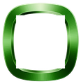

Das Atelier, die drei Apps, der Fonds
Karioli entwickelt Apps, die der Gemeinschaft dienen — und überträgt die Verantwortung einem gemeinnützigen Fonds, den die Träger gestalten.
Was Karioli ist
Ein virtuelles Atelier, kein Unternehmen.
Karioli ist ein virtuelles Atelier, in dem ein Entwickler mit stabilen KI-Agenten arbeitet, mit voller Kontrolle, komplex und kreativ, ohne bei jedem Schritt neu ansetzen zu müssen. Bei Karioli entstehen alle Apps aus der Nutzerperspektive. Aus dieser Arbeitsweise sind bislang drei App-Konzepte entstanden: kariPharm, kariNurse und kariCare. Jedes für sich als Architektur vollständig durchdacht und als interaktive Animation realisiert.
Karioli produziert die Apps nicht selbst. Die eigene technische Produktion ist wenig sinnvoll und derzeit auch unrealistisch. Was im Atelier entsteht, ist das Konzept, aber nicht die Programmierung, der Serverbetrieb oder die Skalierung.
Warum gemeinnützig
Es entstehen auch immer wieder Ideen zu anderen, kommerziellen Anwendungen. Diese motivieren aber nicht. Was zählt, sind die gemeinnützigen Projekte: Etwas zu verschenken, statt es zu verwerten.
Der vierte Ring
Das Karioli-Logo zeigt vier verschlungene Ringe. Drei sind vergeben — kariPharm, kariNurse und kariCare. Der vierte, blaue Ring bleibt vorerst frei: Platz für etwas, was schon da ist, aber noch nicht Gestalt angenommen hat.
Drei Bedingungen
Der Entwickler stellt an jede künftige Trägerschaft der Apps drei Bedingungen — bindend, nicht verhandelbar:
Die drei Apps
Drei Geschwister, eine Haltung.
Alle drei Apps entstehen aus der Sicht und Erfahrungswelt des Nutzers. Das führt im Detail zu anderen, ungewöhnlichen Lösungsansätzen.



Alle drei Apps sind auf demselben Entwicklungsstand: konzeptionell und architektonisch fertig gedacht, aber fortlaufend weiter zu entfalten.
Der Karioli-Fonds
Da der Entwickler nicht auf Dauer zur Verfügung steht und Karioli keine Institution ist, ist die Überführung in einen gemeinnützigen Karioli-Fonds vorgesehen. Die Träger bestimmen Mitgliedschaft und Struktur des Fonds. Der Entwickler setzt die oben genannten drei Bedingungen voraus: Unveräußerlichkeit, Gemeinnützigkeit und Datenschutz.
Der Fonds ist als Drei-Säulen-Struktur passend zu den drei Apps angelegt:
Aufgabenteilung
Der Fonds übernimmt die bürokratische Verwaltung sowie die Vermarktungs- und Finanzierungsstruktur. Er beauftragt die technische Produktion (Universität oder IT-Firma, je nach Kostenanalyse der einzelnen App-Mappe).
Karioli, das Atelier, übernimmt exklusiv die kreative Weiterentwicklung der Apps, entwickelt neue Presets, Anwendungsfälle und Funktionsideen und bewahrt die DNA der Apps. Karioli prüft und kontrolliert außerdem, ob die technische Umsetzung durch Universität oder IT-Firma dieser DNA entspricht, und begleitet die wissenschaftlichen Studien zur Validierung der Apps.
Der Entwickler selbst bleibt Konzeptgeber und Botschafter. Er ist nicht Teil der Fonds-Geschäftsführung oder -Governance.